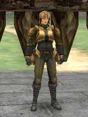
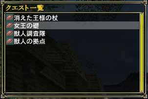

ペンタウァのチャプターは、Main Gate に立っているミッション ウィリスから受けることができます。ミッションウィリスは、依頼人の仲介をしているだけなので、チャプターの詳細は依頼人から直接聞かなければなりません(依頼人に話しかけないとワープストーンが貰えません)。
ミッションウィリスからチャプターを引き受けた後、依頼人の元からワープストーンをもらってください。その後、パーティーメンバー全員がホストゲームにログインしたのを確認してからワープストーンを使います。
ちなみにやりたくないチャプターを引き受けてしまった場合は、サインアウトしない限り別のチャプターを受けることができません。

(ミッション ウィリス)

(消えた王様の杖) |